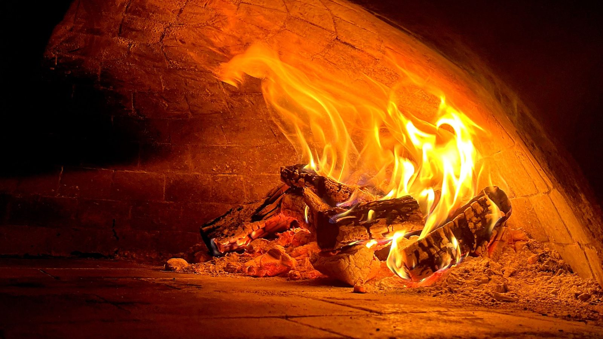
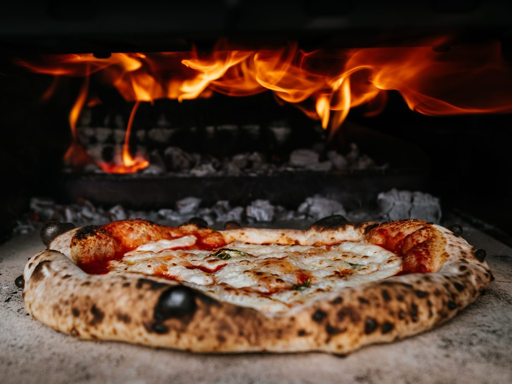
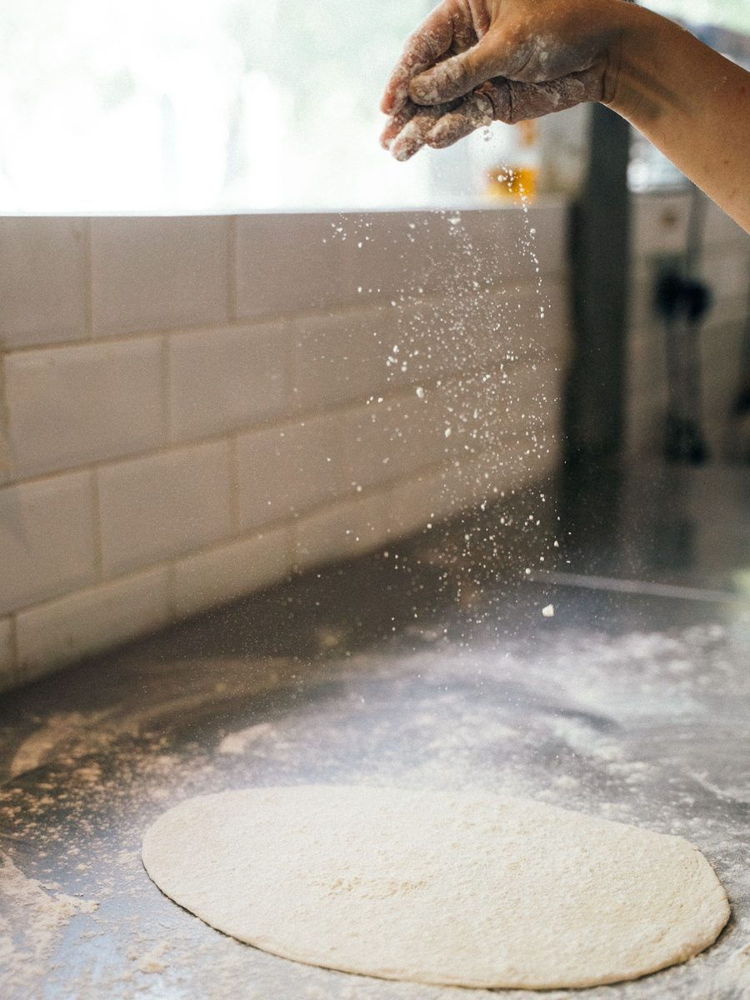
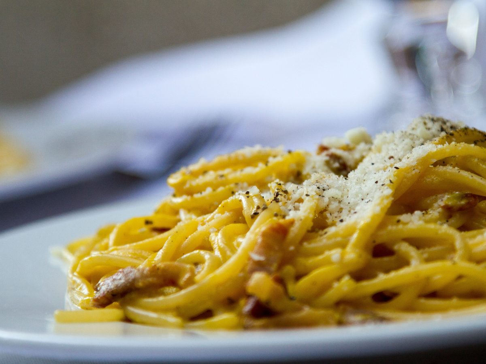
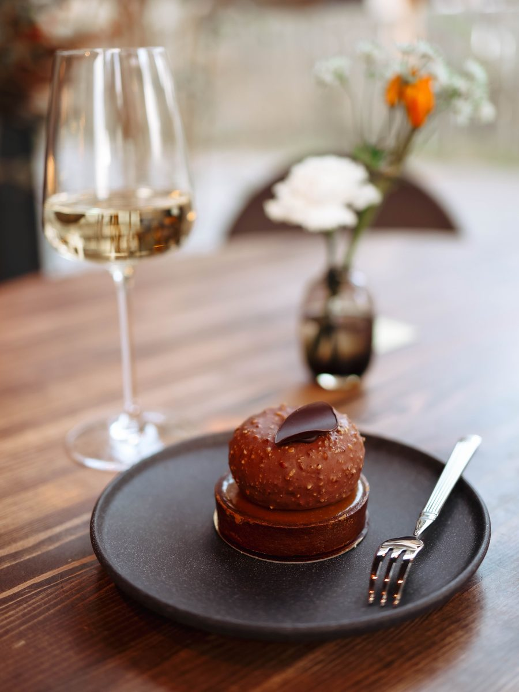
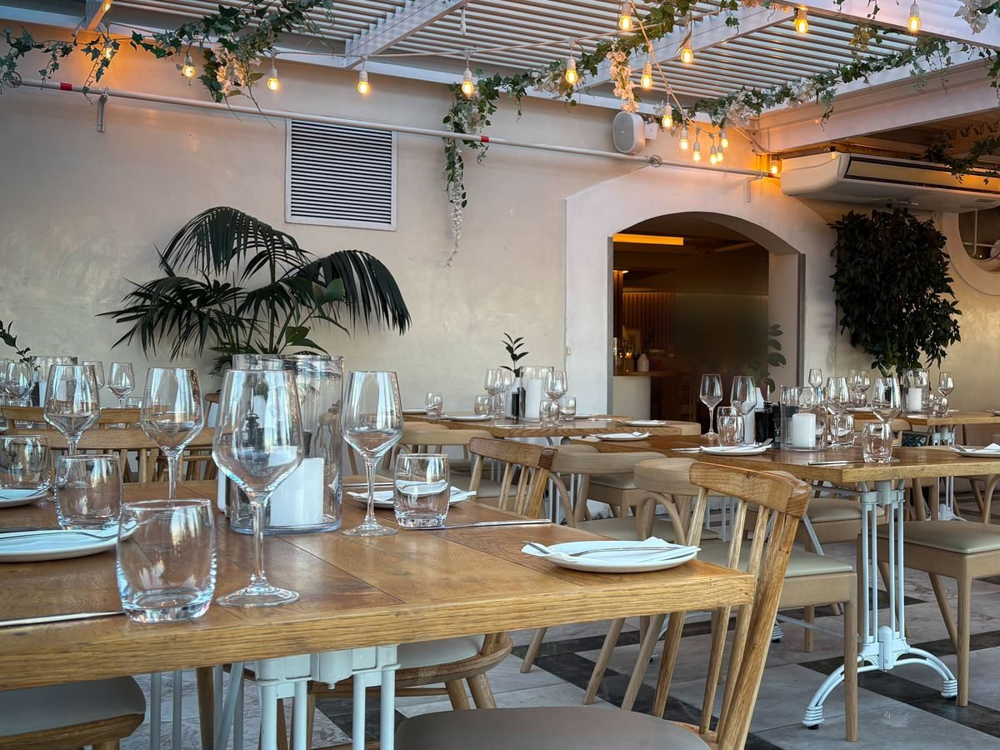
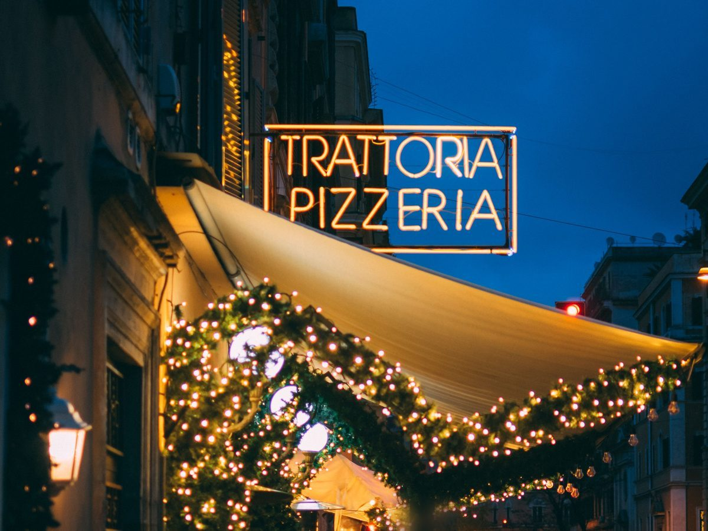

Cucina di casa e pizza napoletana · Lucca
Trattoria Rosa & Basilico
Ricette di famiglia, impasto a lunga lievitazione e il forno a legna acceso ogni sera.
Dal 1987, nel centro di Lucca
La nostra cucina
Nonna Rosa ha aperto la trattoria con quattro tavoli e un quaderno di ricette. Oggi in cucina ci sono i nipoti, ma i tordelli si chiudono ancora a mano, uno per uno.
La pizza è napoletana: impasto lievitato 48 ore, pomodoro San Marzano e fior di latte, un minuto e mezzo nel forno a legna. Verdure e formaggi arrivano dai produttori della Piana e della Garfagnana.
La famiglia Pieri

Dal forno alla tavola
Galleria





Quando trovarci
Orari
| Lunedì | Chiuso |
|---|---|
| Martedì | 12:00–14:30 · 19:00–23:00 |
| Mercoledì | 12:00–14:30 · 19:00–23:00 |
| Giovedì | 12:00–14:30 · 19:00–23:00 |
| Venerdì | 12:00–14:30 · 19:00–23:00 |
| Sabato | 12:00–14:30 · 19:00–23:00 |
| Domenica | 12:00–14:30 · 19:00–23:00 |
La cucina chiude mezz'ora prima. Chiusi per ferie le prime due settimane di novembre.
Come arrivare
Dove siamo
Via del Basilico 1855100 Lucca (LU)
Dentro le Mura, a cinque minuti a piedi da Piazza dell'Anfiteatro. Parcheggio consigliato fuori Porta Santa Maria.
Apri in Google MapsTi aspettiamo
Prenota un tavolo
Il modo più veloce è una telefonata. Per il fine settimana ti consigliamo di prenotare con un giorno di anticipo.
0583 000000- Email info@trattoriarosaebasilico.it
- Orari Mar–Dom 12:00–14:30 e 19:00–23:00
Richiedi una prenotazione
Ti richiamiamo per confermare. La prenotazione vale solo dopo la nostra conferma.